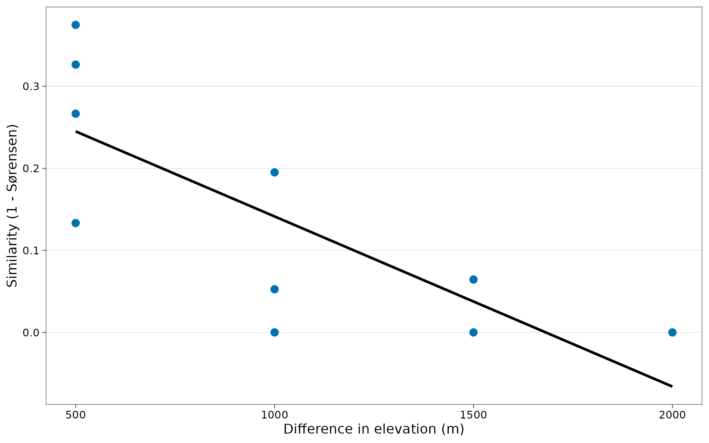

4. Beta diversity: how different are communities?
Source:vignettes/articles/guide-04-beta.Rmd
guide-04-beta.RmdThe concept
Whittaker (1960) described diversity at three scales:
| Scale | Meaning | Example |
|---|---|---|
| Alpha () | Diversity within a site | Ant species at one elevation |
| Gamma () | Diversity of all sites pooled | Ant species on the whole mountain |
| Beta () | How much the sites differ | How much the elevations replace each other’s species |
With Hill numbers the three are linked by multiplicative partitioning (Jost 2007; Chao et al. 2012):
is then the effective number of completely distinct communities: it ranges from 1 (all sites identical) to , the number of sites (no species shared). Because depends on , it is converted to dissimilarities between 0 and 1 that can be compared across studies:
| Dissimilarity | Weighs | Generalises |
|---|---|---|
| Sørensen-type () | Overlap from the point of view of an average site | Sørensen index at q = 0 |
| Jaccard-type () | Overlap from the point of view of the pooled community | Jaccard index at q = 0 |
As with alpha diversity (Chapter 3), beta diversity depends on sampling effort, so tidydiversity computes it at an equal sample coverage (Chao et al. 2023).
1. Gamma, alpha and beta along the mountain
bh <- beta_hill(ants, q = 0:2)
knitr::kable(select(bh, q, coverage, gamma, alpha, beta, dis_sorensen, dis_jaccard),
digits = 3,
caption = "Multiplicative partitioning at equal coverage across the five elevations."
)| q | coverage | gamma | alpha | beta | dis_sorensen | dis_jaccard |
|---|---|---|---|---|---|---|
| 0 | 0.957 | 78.929 | 27.909 | 2.828 | 0.457 | 0.808 |
| 1 | 0.957 | 39.359 | 13.628 | 2.888 | 0.659 | 0.659 |
| 2 | 0.957 | 22.178 | 7.292 | 3.041 | 0.839 | 0.510 |
Interpretation. For species richness (), the mountain holds 78.9 effective species against 27.9 per site, so = 2.83: the five elevations behave like almost three completely distinct communities. The Sørensen-type dissimilarity of 0.46 means that, on average, a site shares only about 54 % of its species with the other elevations. Dissimilarity is higher at and : the dominant species differ between elevations even more than the species lists do.
2. Turnover or nestedness?
The concept
Two sites can differ in two ways (Baselga 2010):
| Component | What happens | Ecological meaning |
|---|---|---|
| Turnover (replacement) | Species are replaced by different species | Environmental filtering, dispersal limits, history |
| Nestedness | The poorer site holds a subset of the richer site’s species | Species loss, e.g. along a stress gradient or after disturbance |
The Sørensen dissimilarity splits exactly into these two parts: .
pairs <- beta_pair(ants)
knitr::kable(pairs, digits = 3,
caption = "Pairwise Sørensen dissimilarity (total) split into turnover and nestedness."
)| site_1 | site_2 | turnover | nestedness | total |
|---|---|---|---|---|
| MW0200 | MW0700 | 0.619 | 0.054 | 0.673 |
| MW0200 | MW1200 | 0.800 | 0.005 | 0.805 |
| MW0200 | MW1700 | 0.900 | 0.035 | 0.935 |
| MW0200 | MW2200 | 1.000 | 0.000 | 1.000 |
| MW0700 | MW1200 | 0.550 | 0.075 | 0.625 |
| MW0700 | MW1700 | 0.900 | 0.047 | 0.947 |
| MW0700 | MW2200 | 1.000 | 0.000 | 1.000 |
| MW1200 | MW1700 | 0.600 | 0.133 | 0.733 |
| MW1200 | MW2200 | 1.000 | 0.000 | 1.000 |
| MW1700 | MW2200 | 0.800 | 0.067 | 0.867 |
multi <- beta_multi(ants)
knitr::kable(multi, digits = 3,
caption = "The same partition for all five sites together (Baselga 2010)."
)| n_sites | turnover | nestedness | total |
|---|---|---|---|
| 5 | 0.79 | 0.074 | 0.864 |
Interpretation. Across all sites, turnover (0.79) makes up 91 % of the total dissimilarity (0.86); nestedness is small. So higher elevations do not simply hold a subset of the lowland fauna: different species replace each other up the mountain. This points to elevation-specific assemblages (filtered by temperature, for example), not to the loss of species from one regional pool.
3. Distance decay
The concept
Communities become less similar as the distance between them grows (Nekola and White 1999), in space or along an environmental gradient. The rate of decay summarises how fast species composition changes. Here the “distance” is the difference in elevation.
decay <- beta_decay(ants, gradient = elevation)
decay
#> # A tibble: 10 × 8
#> site_1 site_2 turnover nestedness total gradient_1 gradient_2 distance
#> <chr> <chr> <dbl> <dbl> <dbl> <int> <int> <dbl>
#> 1 MW0200 MW0700 0.619 0.0544 0.673 200 700 500
#> 2 MW0200 MW1200 0.8 0.00488 0.805 200 1200 1000
#> 3 MW0200 MW1700 0.9 0.0355 0.935 200 1700 1500
#> 4 MW0200 MW2200 1 0 1 200 2200 2000
#> 5 MW0700 MW1200 0.55 0.075 0.625 700 1200 500
#> 6 MW0700 MW1700 0.9 0.0474 0.947 700 1700 1000
#> 7 MW0700 MW2200 1 0 1 700 2200 1500
#> 8 MW1200 MW1700 0.6 0.133 0.733 1200 1700 500
#> 9 MW1200 MW2200 1 0 1 1200 2200 1000
#> 10 MW1700 MW2200 0.8 0.0667 0.867 1700 2200 500
ggplot(decay, aes(distance, 1 - total)) +
geom_point(size = 2.5, colour = "#0072B2") +
geom_smooth(method = "lm", formula = y ~ x, colour = "black", se = FALSE) +
labs(x = "Difference in elevation (m)", y = "Similarity (1 - Sørensen)") +
theme_tidydiversity()
Interpretation. Similarity falls steadily with
elevation difference: sites 500 m apart share far more species than
sites 2,000 m apart, which share almost none. For a formal test of the
slope (pairs are not independent, so ordinary regression p-values are
wrong), use beta_decay_model(), which tests by
permutation.
How to report it
Beta diversity was quantified by multiplicative partitioning of Hill numbers at equal sample coverage (Chao et al. 2023) in tidydiversity. Across the five elevations, gamma richness was 78.9 and mean alpha richness 27.9 (beta = 2.83; Sørensen-type dissimilarity 0.46). Partitioning Sørensen dissimilarity (Baselga 2010) showed that turnover accounted for 91 % of compositional differences.
References
Baselga, A. (2010). Partitioning the turnover and nestedness components of beta diversity. Global Ecology and Biogeography, 19, 134-143.
Chao, A., Chiu, C.-H. and Hsieh, T. C. (2012). Proposing a resolution to debates on diversity partitioning. Ecology, 93, 2037-2051.
Chao, A. et al. (2023). Rarefaction and extrapolation with beta diversity under a framework of Hill numbers: the iNEXT.beta3D standardization. Ecological Monographs, 93, e1588.
Jost, L. (2007). Partitioning diversity into independent alpha and beta components. Ecology, 88, 2427-2439.
Nekola, J. C. and White, P. S. (1999). The distance decay of similarity in biogeography and ecology. Journal of Biogeography, 26, 867-878.
Whittaker, R. H. (1960). Vegetation of the Siskiyou Mountains, Oregon and California. Ecological Monographs, 30, 279-338.